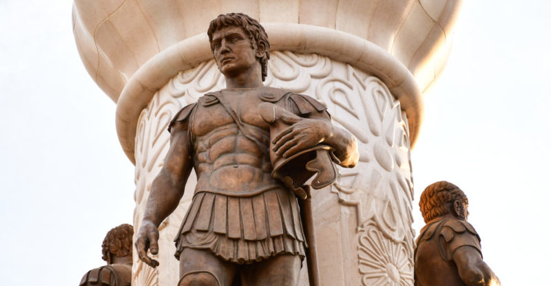
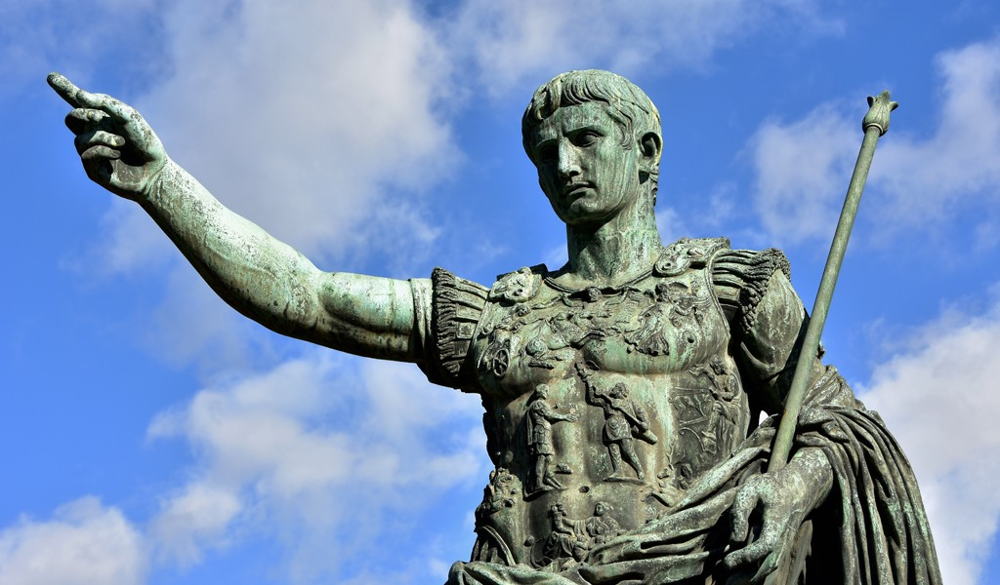
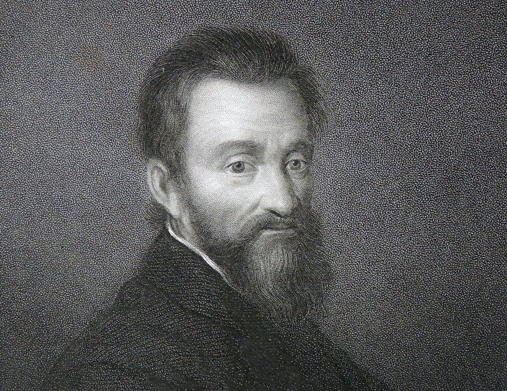
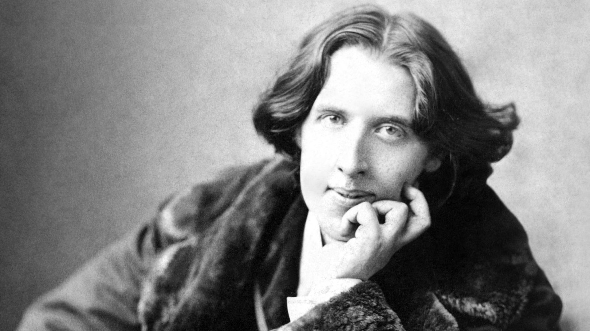
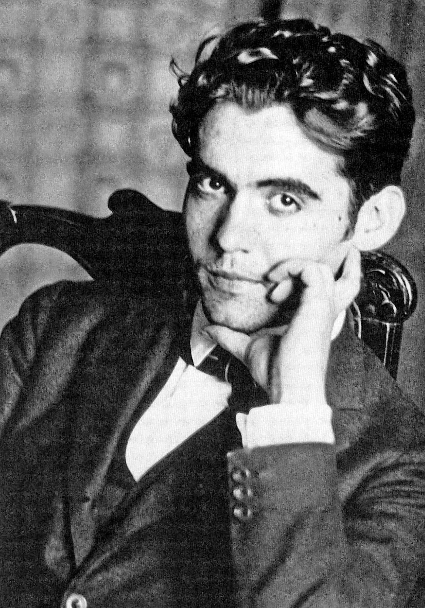

Los famosos
Ayudando desde tiempos inmemoriales
Hubo gente de todos los tipos en la historia vinculados al mundo LGBT y que, gracias a ellos, se empezó a dar visibilidad a un colectivo históricamente oprimido. Algunos fueron activistas, otros vivían su vida tranquilamente, pero todos jugaban un papel muy importante.
En esta sección, destacaremos personajes importantes en la historia de nuestro mundo relacionados con el LGBT, ya fuera por activismo o por serlo.
Sócrates

Puede sorprender a muchos, pero bien es cierto que mantenía relaciones con personas del mismo sexo, cosa que no estaba mal vista por aquel entonces. Aparte de sus enseñanzas, también mantenía relaciones con algunos de sus alumnos. Fue condenado a muerte, acusado de herejía religiosa y corrupción de la juventud. Se suicidó tomando cicuta debido a la injusticia de las acusaciones.
Alejandro Magno
Sorprendente, ¿verdad? Fue un militar infalible y un genio en las batallas. Asumió el trono con sólo 20 años de edad y, en 11 años de batallas, no perdió una. Una vez más, las relaciones del mismo sexo no estaban mal vistas en aquella época y menos entre militares de distinto rango. Fue un gran guerrillero que no tuvo descendencia y amó a Hefestión. Rompiendo con los estereotipos, fue un personaje muy influyente.
Julio César
El siguiente caso es bastante extraño, pero también puede contar. Con 16 años, su padre murió y empezó a llevar su reinado, intentando devolver la gloria a su familia. Tuvo a muchas mujeres amantes como Cleopatra, pero también un amor frustrado llamado Vercingetorix. Lo secuestró como trofeo de guerra y lo encarceló durante cinco años para mantener relaciones con él, pero acabó enamorado. El joven Vercingetorix negó ser su amante en público y Julio César ordenó su ejecución en un acto de rabia, aunque se arrepentiría por ello. Es sabido que disfrutaba de la compañía de hombres, siendo un personaje muy influyente en la historia LGBT.
Miguel Ángel
Un artista muy reconocido en su historia por las esculturas, sonetos y obras. Tuvo amantes a los que hizo sonetos: Gherardo Perini y Febo di Poggio. Si bien los amó, posteriormente tubo un amor platónico llamado Tommaso de Cavalieri. Una pena que, al morir, su sobrino se cambió los apellidos por miedo a que lo relacionaran con la homosexualidad de su tío. Le gustaba mucho el físico masculino como se puede ver en el David, Moisés o los murales de la Capilla Sixtina.
William Shakespeare

Uno de los escritores más influyentes de la historia del mundo, si no el más conocido. En sus obras, mostraba preocupación por los hombres y las mujeres travestidos y confusiones en el sexo de los personajes. Nunca lo confesó, pero documentos que encontraron revelaban que tenía atracción por los hombres y hasta tuvo relaciones. No se pueden saber los nombres debido al secretismo del autor, pero se podía saber que le gustaban los chicos. Ser gay o no ser gay, he ahí la cuestión.
Oscar Wilde
Un conocido escritor irlandés que se sabe, mantuvo relaciones con un hombre. Su nombre: Lord Alfred Douglas. El padre de este mismo hombre, el marqués de Queensberry, le acusó a Wilde de sodomía y le declararon culpable, condenado dos años a trabajos forzosos. Escribió dos obras describiendo su estancia en la cárcel. Después de salir de la cárcel, Douglas y Wilde se volvieron a ver en Francia. Ambas familias desaprobaron el encuentro y la mujer de Oscar no quiso volver a verle y no le permitió volver a ver a sus hijos. Historia trágica.
Federico García Lorca
Ya en nuestro país, el caso más conocido fue el de nuestro querido dramaturgo, Lorca. Formó parte de la generación del 27 jutno a escritores de renombre como Rafael Alberti, Dámaso Alonso o Luis Cernuda. Gracias a su viaje a Nueva York, se liberó de fantasmas y complejos que le atormentaban. Con ello vino que su relación con otros hombres se torna más visible. En Madrid, en los años 30, cae enamorado de Rafael Rodríguez Rapún, quien fue la obsesión del poeta. Aunque le fue infiel con mujeres, ya que era bisexual y le dejó muy mal emocionalmente al pobre dramaturgo. El final de su vida fue indigno para un talentoso artista como él. Después del golpe de estado en 1936, fue detenido, acusado de se espía soviético, ser secretario de Fernando de los Ríos y ser homosexual. Sin más dilación, fue fusilado. Como se puede ver, Federico García Lorca fue maltratado por la dictadura, cuando él sólo se consideraba un "hombre de mundo y hermano de todos" y no discriminó a nadie por cuestión política. Fueron tiempos horribles para nuestro país.
Todos los derechos reservados // Curso de HTML / CSS Wikipedia.es